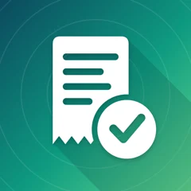

Garážka reúne todo sobre tu coche o moto: ITV, seguro, mantenimiento y combustible. Te recuerda los plazos y muestra cuánto te cuesta realmente el vehículo.
Funciones principales
- Recordatorios de ITV, seguro y mantenimiento
- Repostajes, consumo y coste por km
- Libro de mantenimiento con fotos de facturas
- Registro de trayectos opcional
- Gráficos, exportación PDF y CSV, widget y Siri
Funciona con

Záruky a dokladyGuarda los documentos del coche y vigila su validez.
Política de privacidad (en inglés)
Estamos trabajando en esta app; llegará pronto.